Design with
intent.
NoShitUi-skill helps your AI discover UI resources, compare approaches, and build a coherent interface. Follow a workflow from resource discovery to implementation and verification, then explore the working examples below.
THE DECISIONS BEHIND THE DEMOS
Three choices. Three ways to ship.
Compare source-owned components, a native workflow editor, and a 3D renderer through three reproducible selection cases.
Skill output examples
20 examples
OBJECT//
Make it yours.
A Three.js lamp studio with CC0 glTF models, material choices, and brightness controls for a live 3D preview.
Configure the object ↗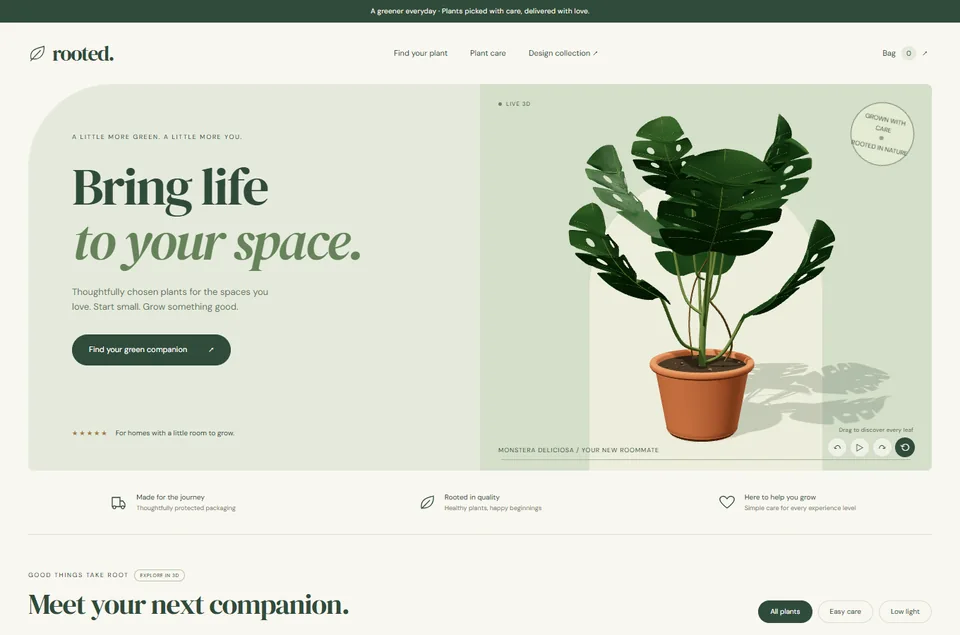
↻ EXPLORE IN 3D02 / BOTANICALrooted.
Grow something good.
Four sculpted plants to turn and explore, with warm ceramic pots, care guidance, filters, and a working shopping bag.
Visit the shop ↗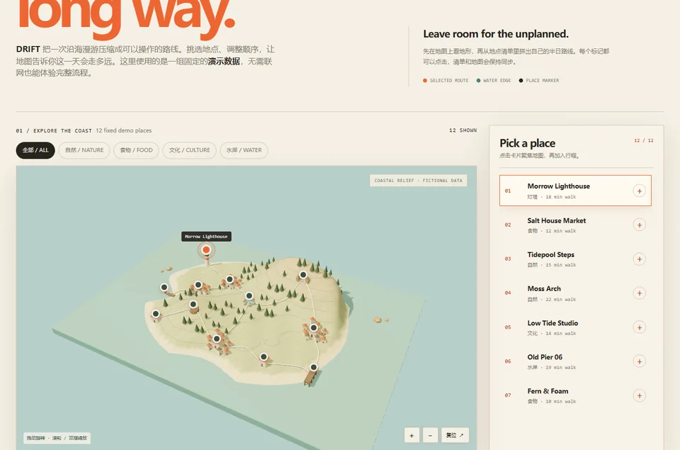
↻ EXPLORE IN 3D03 / MAP EXPLORERDRIFT.
Take the long way.
Explore a Three.js coastal map with terrain, places, and routes, then collect stops in a saved itinerary.
Explore the map ↗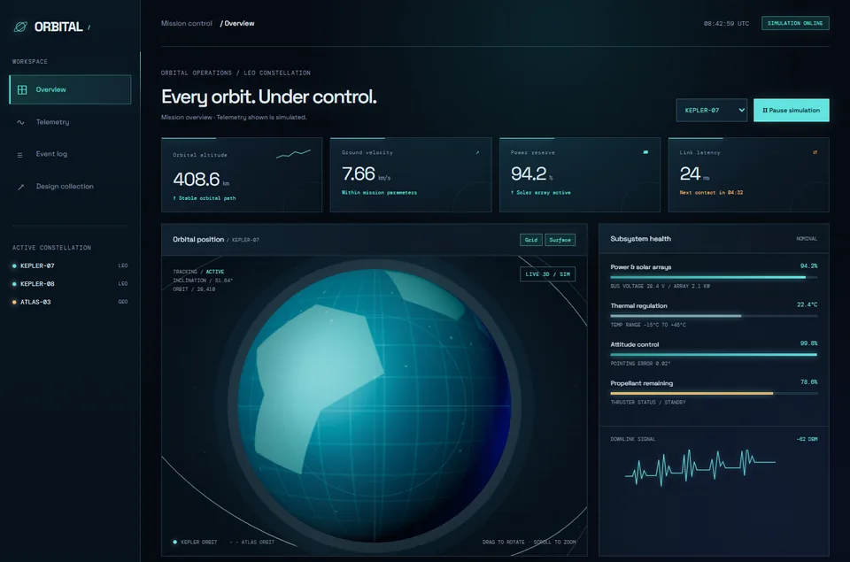
↻ EXPLORE IN 3D04 / CONTROL ROOMORBITAL/
Every orbit. Under control.
A dense mission dashboard with telemetry, subsystem status, orbit visualization, and simulation controls.
Launch mission control ↗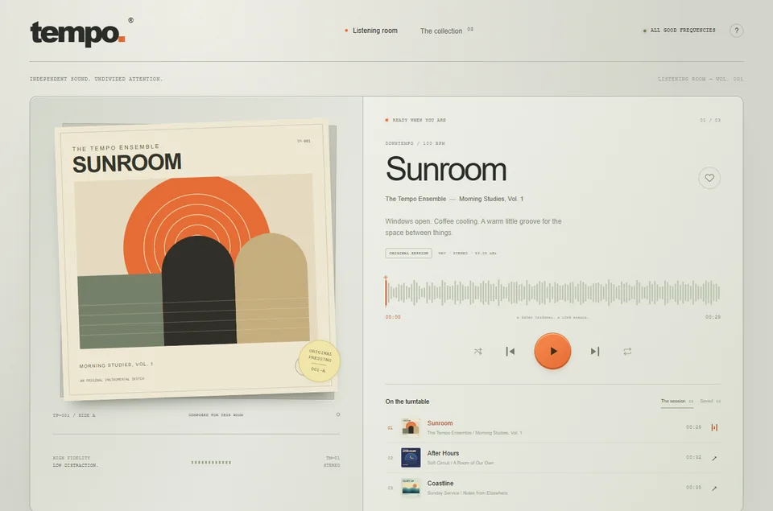
NEW / TRY IT OUT05 / ORIGINAL MUSIC & LISTENING ROOMTEMPO
A good place
to press play.
An original listening room with three local tracks, a live waveform, a record collection, and a queue that follows the music.
Explore TEMPO ↗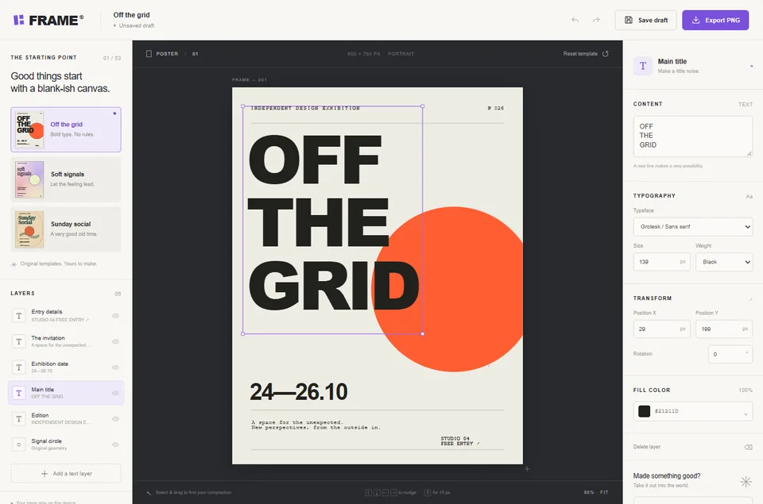
NEW / TRY IT OUT06 / POSTER DESIGN & EXPORT STUDIOFRAME
Make something
worth keeping.
A hands-on poster studio. Choose a template, move the layers, find your words, and take home a real PNG or SVG.
Explore FRAME ↗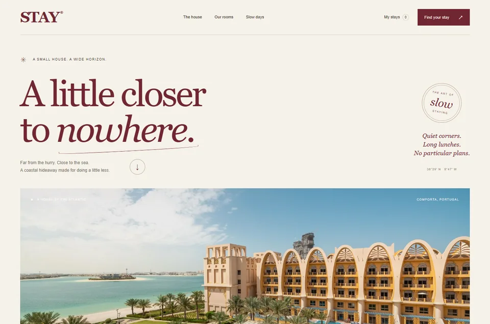
NEW / TRY IT OUT07 / COASTAL RETREAT & BOOKING EXPERIENCESTAY
Somewhere
to slow down.
A sun-soaked coastal retreat with room discovery, date and guest selection, a complete booking flow, and saved reservations.
Explore STAY ↗ NEW / TRY IT OUT08 / VISUAL WORKFLOW EDITORNODE
A little logic.
A lot of possibility.
Build a flow, connect the pieces, and watch a local simulation bring it to life. An editable canvas with parameters, validation, and a run log.
Explore NODE ↗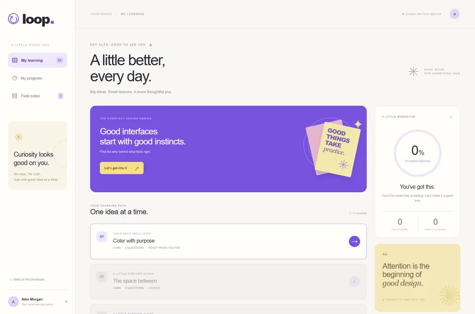
NEW / TRY IT OUT09 / SMALL LESSONS AND LASTING PROGRESSLOOP
A little better.
Every day.
A thoughtful learning space with three practical design lessons, quizzes with explanations, field notes, and progress that stays with you.
Explore LOOP ↗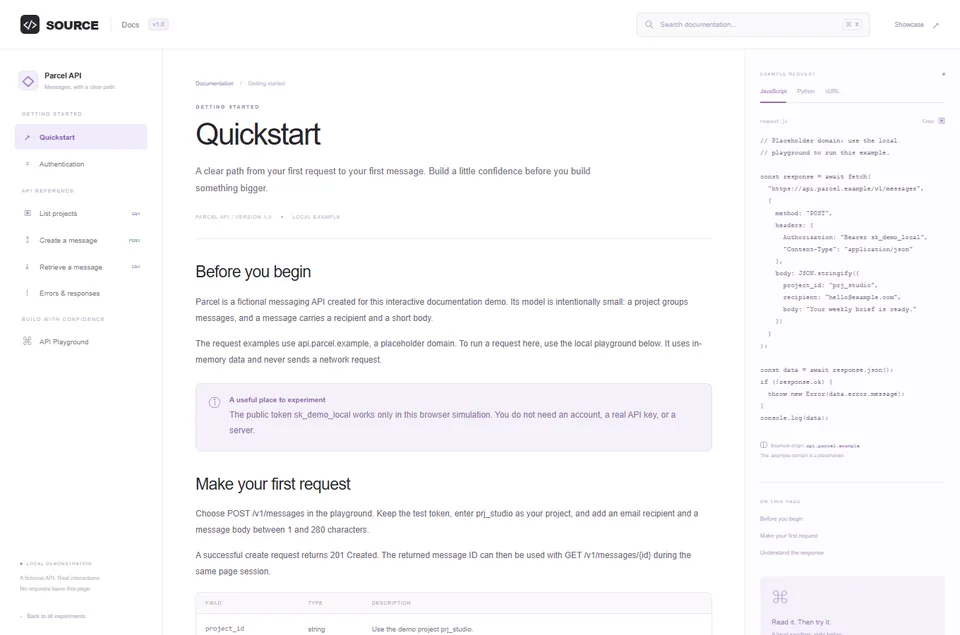
NEW / TRY IT OUT10 / DEVELOPER DOCS AND API PLAYGROUNDSOURCE
Less searching.
More building.
Explore a complete fictional API, search the docs, switch code examples, and try requests in an interactive local playground.
Explore SOURCE ↗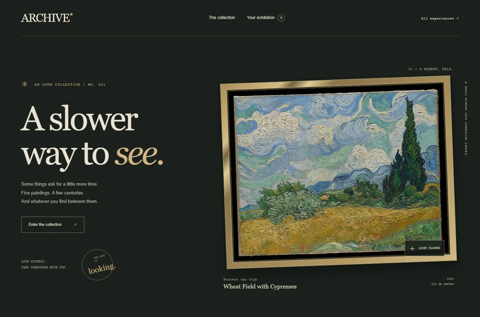
NEW / TRY IT OUT11 / OPEN ART AND PERSONAL EXHIBITIONSARCHIVE
A slower
way to see.
Five public-domain paintings to look at closely. Explore the periods, zoom into the details, and take home a personal exhibition guide.
Explore ARCHIVE ↗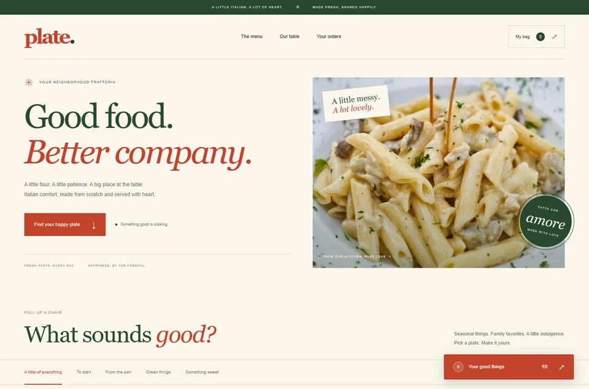
NEW / TRY IT OUT12 / A NEIGHBORHOOD KITCHEN AND ORDERINGPLATE
Good food.
Your way.
A neighborhood Italian kitchen with a menu to explore, dishes to make your own, a working bag, and a complete demonstration ordering flow.
Explore PLATE ↗ 13 / OPERATIONSPRECISION_
Make work visible.
A calm operations workspace for records, filters, edits, and the small states that make a product trustworthy.
Open the workspace ↗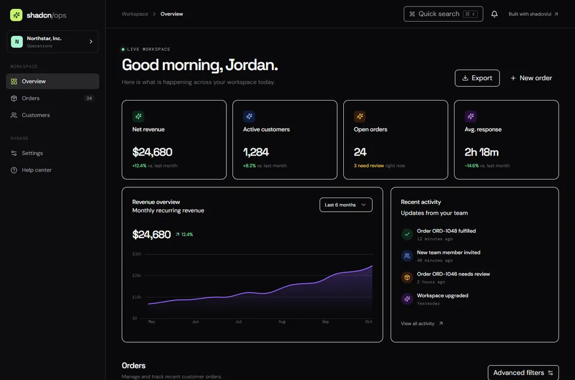
14 / COMPONENT WORKSPACESHADCN/OPS
Orders in focus.
A shadcn/ui orders dashboard with search, status filters, and an edit dialog for session-based records.
Open the dashboard ↗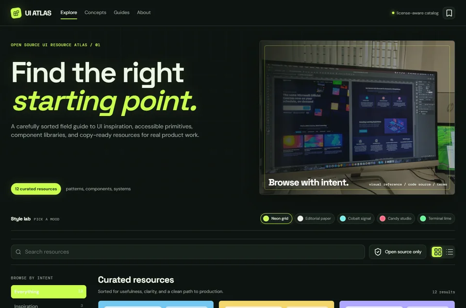
15 / RESOURCE DISCOVERY EXAMPLEResource atlas
Research with intent.
A resource discovery example for NoShitUi-skill: browse UI references, filter by category, save useful finds, and compare visual directions.
Try the resource discovery example ↗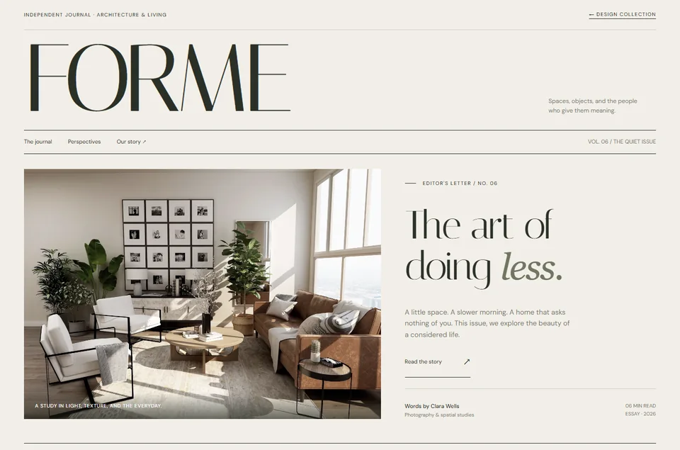
16 / EDITORIALFORME
The quiet issue.
An architecture journal for considered living, with serif typography, image-led pacing, and focused reading.
Open the journal ↗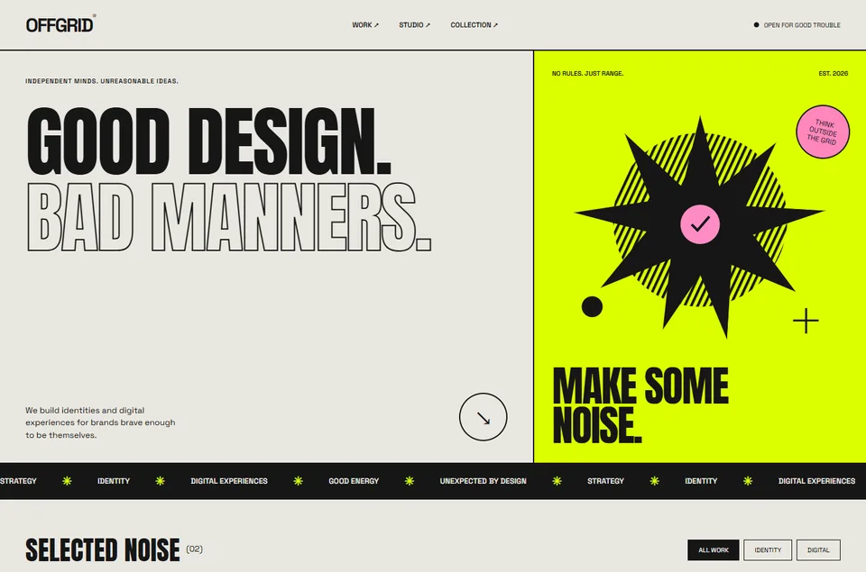
17 / STUDIOOFFGRID®
Make some noise.
A rebellious design studio built from posters, marquee type, acid color, and big gestures.
Enter the studio ↗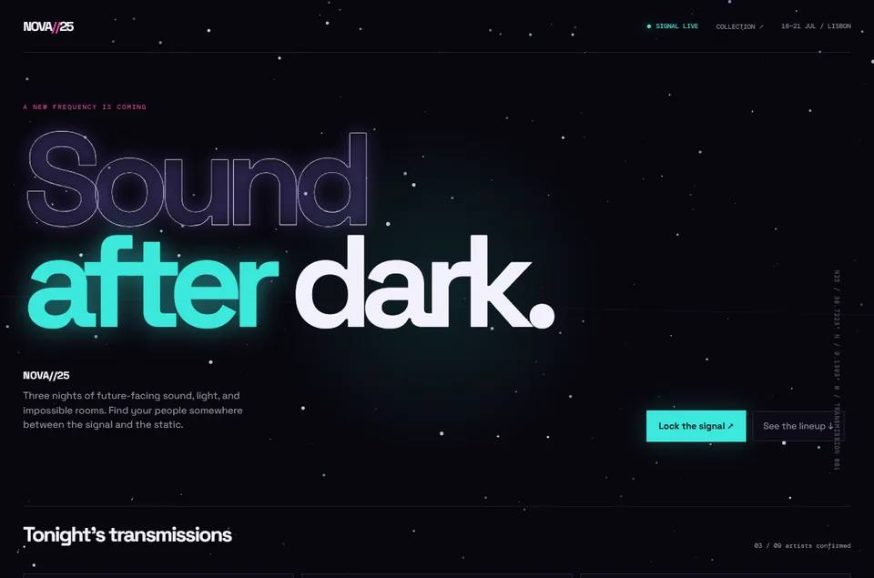
18 / NEON FESTIVALNOVA//25
Sound after dark.
A neon festival concept with an animated particle field, glowing signals, and an interactive ticket moment.
Lock the signal ↗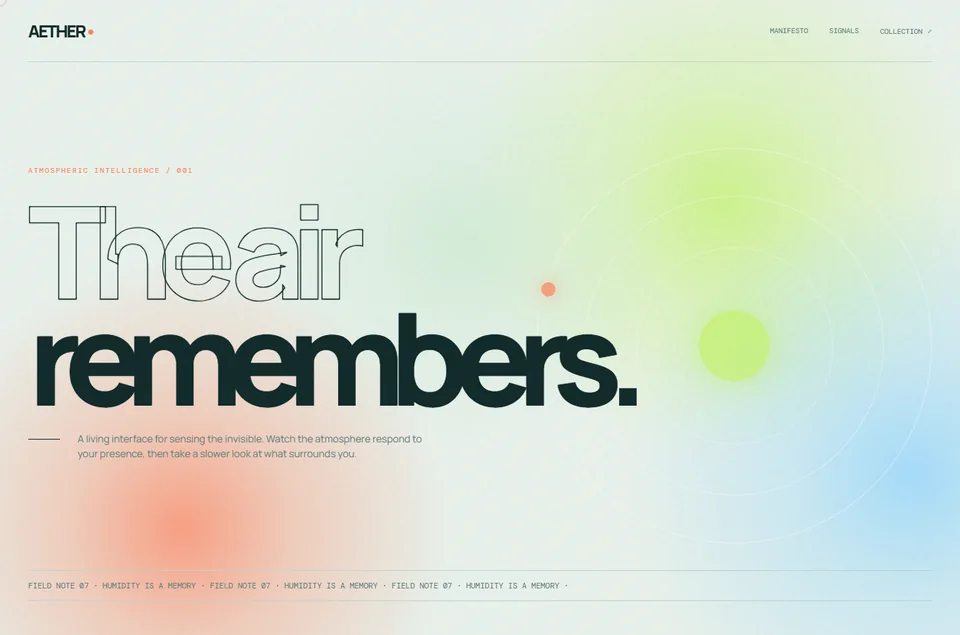
19 / ATMOSPHERICAETHER
The air remembers.
An atmospheric visual experiment built from fluid color, orbiting light, and magnetic cursor interaction.
Enter the atmosphere ↗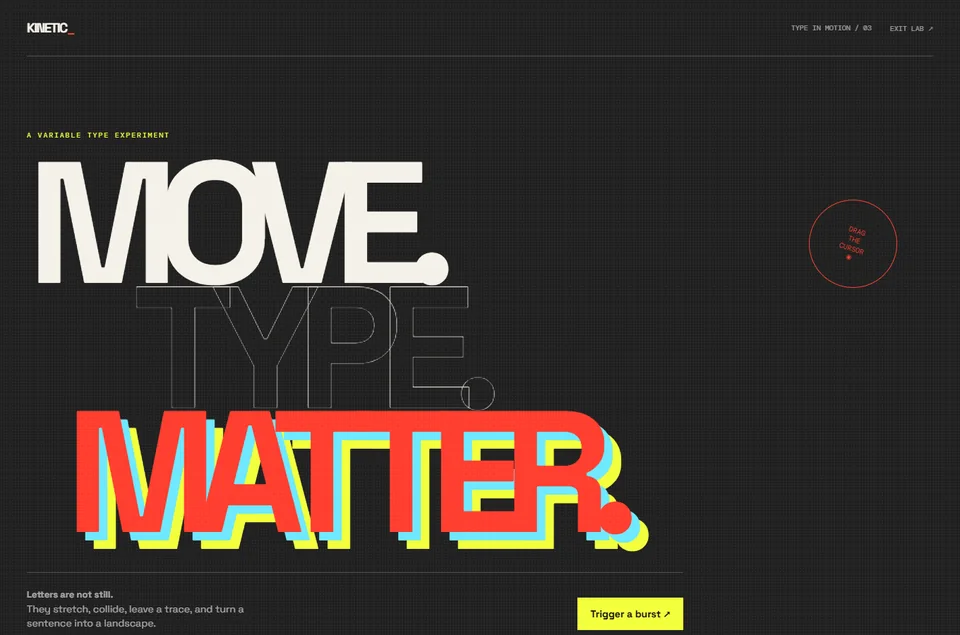
20 / TYPE LABKINETIC_
Move. Type. Matter.
A typographic playground where cursor trails, offset color, and a burst control make letters feel physical.
Enter the lab ↗No examples in this view.
Try another keyword or return to all Skill outputs.
The workflow behind every example.
These demos show the outputs of NoShitUi-skill: resource research becomes a visual direction, a representative workflow, and a working interface. Discover resources, compare approaches, implement the design, and verify the result.
All twenty examples belong to this Skill showcase, from four 3D experiences to product workflows, creative tools, and brand pages. The resource atlas and shadcn dashboard are examples within the collection. Use the GitHub guide to install the Skill and apply its workflow to your own project.
- 01OBJECT//3D lamp configurator
- 02rooted.Sculpted plants & shopping bag
- 03DRIFT.3D coastal map & route planner
- 04ORBITAL/Orbital visualization & mission control
- 05TEMPOOriginal music & listening room
- 06FRAMEPoster design & export studio
- 07STAYCoastal retreat & booking experience
- 08NODEVisual workflow editor
- 09LOOPSmall lessons and lasting progress
- 10SOURCEDeveloper docs and API playground
- 11ARCHIVEOpen art and personal exhibitions
- 12PLATEA neighborhood kitchen and ordering
- 13PRECISION_Operations workspace
- 14SHADCN/OPSOrders dashboard
- 15Resource atlasSkill resource discovery example
- 16FORMEArchitecture journal
- 17OFFGRIDDesign studio & portfolio
- 18NOVA//25Neon music festival
- 19AETHERAtmospheric visual experiment
- 20KINETIC_Interactive type playground